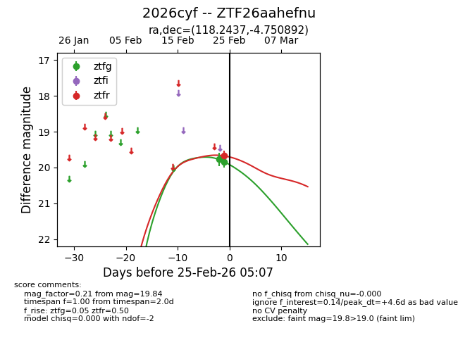
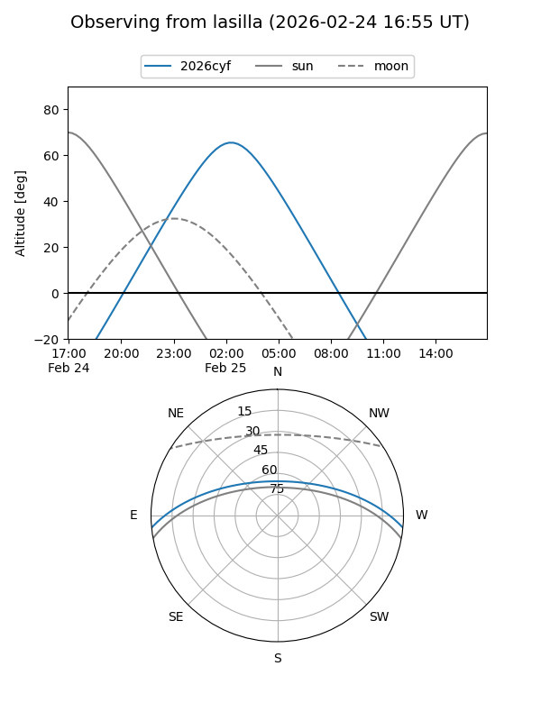
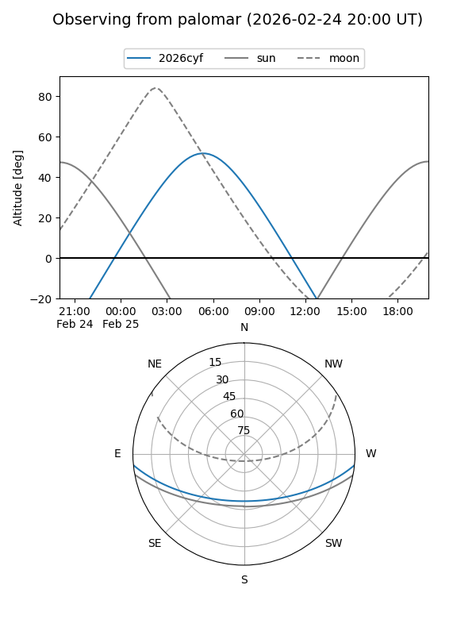
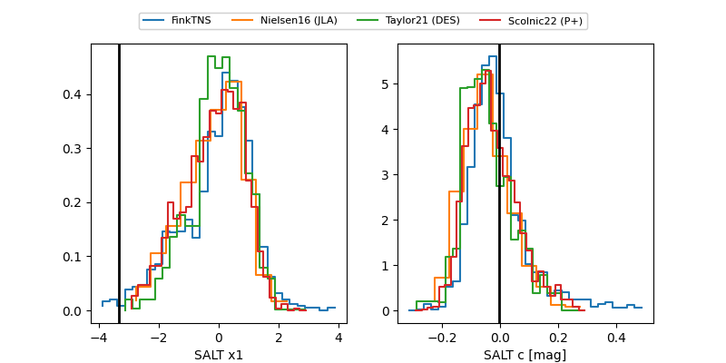

2026cyf
Target 2026cyf at 2026-02-25 05:08
Aliases and brokers:
FINK: link
Lasair: link
ALeRCE: link
TNS: link
YSE: link
alt names
ZTF26aahefnu (ztf,fink_ztf)
2026cyf (tns,yse)
Coordinates:
equatorial (ra, dec) = 118.2437,-4.75089
equatorial (HMS+DMS) = 07:52:58.49,-04:45:03.21
galactic (l, b) = (224.3618,+11.39244)
Flags:
Photometry:
last ztfg=19.84, ztfr=19.68
2 ztfg, 1 ztfr detections
Lightcurve

Visibility


Additional plots
